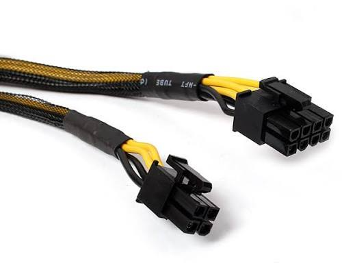

Key Reminder: ATX 24-Pin Warning: When connecting a 20+4 pin ATX cable, clip the 4-pin block to the 20-pin block BEFORE inserting them together so the motherboard is not under-wattage.
Five Primary Power Supply Unit (PSU) Connectors

Standard ATX Power Supply Unit (PSU) motherboard, CPU, storage, and GPU connectors.
Connector
Target Component
Key Identification
1. 20/24-Pin ATX
Motherboard main power
Largest rectangular block (20 pins + detachable 4-pin block).
2. ATX P4 / EPS (4/8-Pin)
CPU (Processor)
Black & yellow wires plugged near the CPU socket.
3. Molex (4-Pin)
Legacy HDDs / Optical Drives / Fans
4 large round pins inside a white trapezoidal housing.
4. SATA Power
Modern SSDs & SATA HDDs
Thin, flat L-keyed black connector.
5. PCI Express (6/8-Pin)
Dedicated Graphics Card (GPU)
6-pin or 6+2 pin connector powering high-wattage GPUs.
Checking System Specs (msinfo32): Open System Information to inspect OS version, Installed Physical Memory (RAM), System Type (x64 = 64-bit; x86 = 32-bit), and total disk capacity.
Quiz 2.1: PC Power Supply Connectors & System Diagnostics
3 Questions • Instant Feedback
Lesson 2.2: BIOS/UEFI Setup & Bootable OS Deployment (Ventoy)
Key Reminder: NEVER Format Drive C: When installing an OS or cleaning storage partitions, never format SYSW (Drive C:) unless performing an authorized clean wipe, as it holds the active OS.
UEFI: Modern graphical interface with mouse support, Secure Boot, and GPT partition style (> 2 TB drive support).
CMOS Reset: Soft reset via "Load Setup Defaults" or hard reset by removing the CR2032 coin-cell battery for 5–10 minutes.
Creating a Ventoy Bootable Flash Drive & Driver Priority
Bootloaders require sector-by-sector .iso disk images (not .exe files). Run Ventoy2Disk.exe, type YES in all uppercase to initialize the USB drive, and copy the Windows ISO and Driver Pack onto it. After OS installation, install drivers in strict priority order: 1. Chipset Driver (Most Important) → 2. Network (LAN/Wi-Fi) → 3. Audio & Peripherals → 4. Video/Graphics Driver.
Quiz 2.2: BIOS/UEFI Setup & Bootable OS Deployment (Ventoy)
3 Questions • Instant Feedback
Lesson 2.3: Disk Partitioning Using Command Prompt (Diskpart)
Key Reminder: Diskpart Clean Warning: Double-check 'list disk' before typing 'clean'—running 'clean' on the wrong disk wipes every partition on that drive immediately!
Essential Diskpart CLI Commands & File Systems
Partitioning divides a single physical disk into separate logical volumes to isolate personal data from OS crashes. Use FAT32 for volumes 32 GB and below, and NTFS for volumes larger than 32 GB.
diskpart
list disk
select disk 1
clean
create partition primary size=128000
format fs=ntfs quick label="System"
active
assign letter=R
create partition extended
create partition logical size=28000
format fs=fat32 quick label="Data_G"
assign letter=G
exit
Quiz 2.3: Disk Partitioning Using Command Prompt (Diskpart)
3 Questions • Instant Feedback
References
Mueller, S. (2022). Upgrading and Repairing PCs (22nd ed.). Que Publishing.
Read through each lesson and test your understanding with the inline quiz at the end. Click Mark Lesson Completed to update your progress bars and daily study streak!